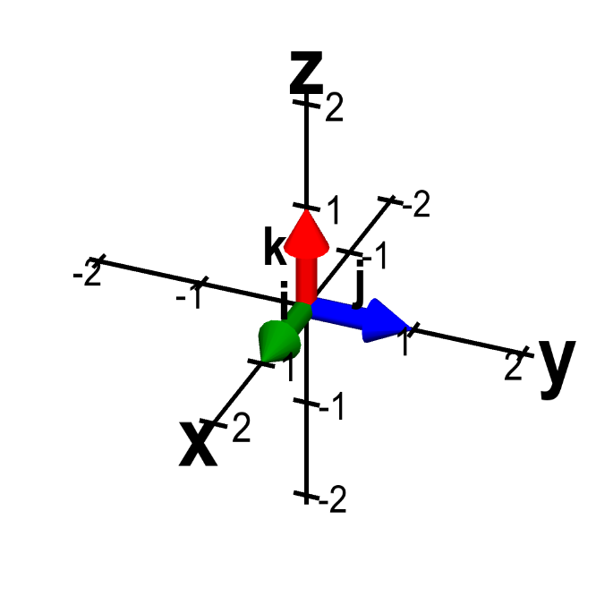
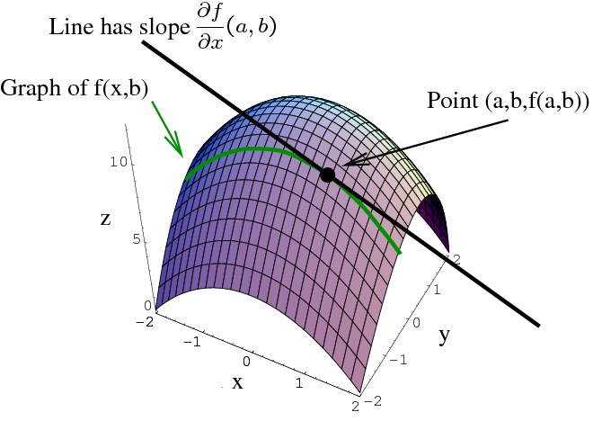
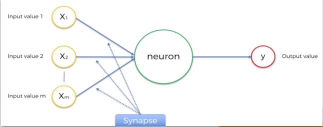

Coursera Mathematics in Machine Learning Course: Overview
This course was split into three sections: Linear Algebra, Multivariate Calculus and Principal Component Analysis. All three sections covered a wide range of material and allowed me to apply what I had learned using a nunber of Python coding assignments. The Linear Algebra section covered the basics of vectors and matrices, as well as vector calculations and matrix transformations. The section concluded with the application of the material in the context of the inner workings of the Google Pagerank algorithm. The Multivariate Calculus section revolved around derivatives to cover concepts such as the Jacobian, Hessian, Taylor and Maclaurin series, Gradient Descent and more. It also introduced the basics of Artificial Neural Networks. Finally, the Principal Component Analysis section covered concepts such as the inner product, projections and, most importantly, PCA, a popular method used in machine learning to reduce dataset dimensionality.

Udemy Machine Learning A-Z Course: Overview
This course outlined the entire machine learning process and introduced various machine learning algorithms to be used in different dataset situations. The course started with data preprocessing and introduced different methods of processing a dataset before running through a machine learning algorithm and described how to deal with situations where the dataset is incomplete. Then, it moved on to cover Regression, Classification, Clustering, Reinforcement Learning, and Deep Learning algorithms used to train a model on a dataset. Finally, the course covered methods of dimensionality reduction, like PCA, and model selection and boosting, or ways to fine tune and improve a model. The course also contained code for these algorithms at every step. For more details on what I learned in this course, click the following link - Machine Learning Slides

Coursera Mathematics in Machine Learning Course: Connections to Project
For my project, my main focus was on the Multivariate Calculus sections, where derivative-based concepts were covered in detail. One of the algorithms I plan to develop in my project, the First Order Difference CFAR, essentially involves calculating a rate of change between noise points. Once that rate exceeds a threshold, a boundary is set between noise points that are used to compute the noise mean estimate, and points that are not. Thus, this section of the course in particular introduced new concepts that I may be able to apply when developing my CFAR algorithms.

Udemy Machine Learning A-Z Course: Connections to Project
For my project, my main focus was the Deep Learning section of the course, as there have been deep-learning based CFAR algorithms developed in the past. Thus, this part of the course helped me to better understand how these CFAR algorithms work. For instance, an ANN-CFAR, which is a CFAR algorithm based on Artificial Neural Networks, has been developed, and this section of the course helped me comprehend the inner workings of this algorithm, which could help me to add a new deep-learning based aspect to my project in the future.